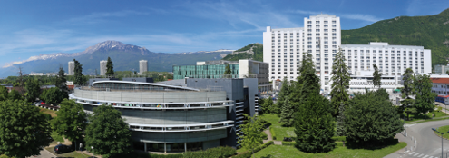

Welcome to the REYNOIRD lab!
Lysine methylation-based cell signaling in cancer

Our laboratory is interested in deciphering new lysine methylation signaling and their implication in human cancer.
Lysine methylation is a covalent post-translational protein modification (PTM) contributing to all aspects of cell biology. Lysine methylation signaling is a dynamic process thanks to the lysine methyltransferases (KMTs, catalyzing addition of methyl groups), lysine demethylases (KDMs, erasing such modifications) and specific methyl-binders (promoting appropriate responses). Lysine methylation of histone proteins are known to fundamentally regulate chromatin function, however there is a growing appreciation that a number of non-histone proteins undergo lysine methylation. Thus, it is likely that many proteins involved in cell homeostasis are methylated and that deregulation in protein methylation signaling may play a role in various diseases. Despite the fundamental role for this modification in biology, relatively few protein lysine methylation substrates have been identified and the function of lysine methylation signaling rarely characterized.
Our recent works focus on the discovery of new SMYD2 and SMYD3 signaling. We identified several new substrate candidates and we are now in the process of characterizing corresponding new lysine methylation signaling. Meanwhile, we aim to unravel activity of uncharacterized KMTs, as theoretically more than hundred human enzymes can methylate lysines.
Our group emerged in 2017 and is currently hosted within Pr. Hainaut lab at the Institute for Advanced Biosciences, Grenoble, FRANCE.